Kliknite gdje se želite vratiti!
Kod prve vježbe ovoga kolegija sam napravio svoj vlastiti font pomoću programa Fontforge; izradio sam slova svoga imena i prezimena te sva slova hrvatskog jezika.
Kliknite na ovaj link da otvorite PDF dokument.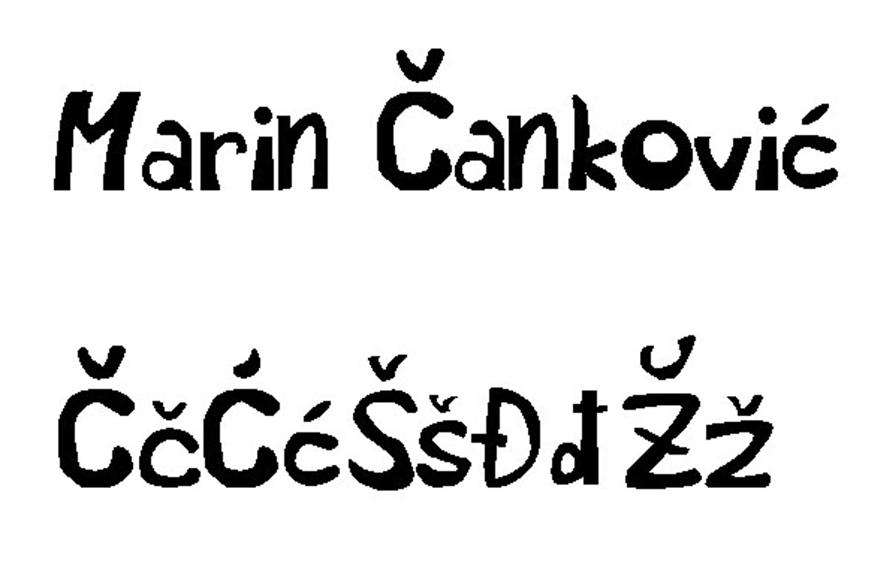
Nakon toga, stvoreni font sam u Illustratoru pomoću Bezierovih krivulja i interpolacije (Blend alata) stvorio masku.
Link za drugi PDF dokument.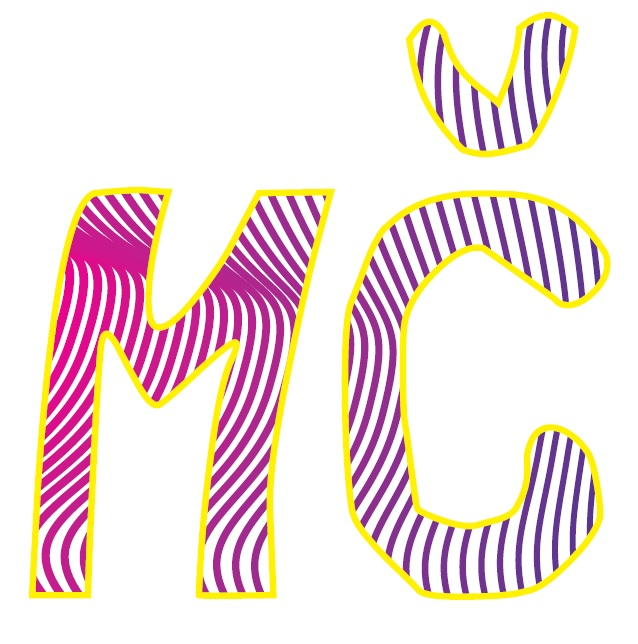
Ovdje sam stvorio vektorske objekte pomoću definiranja swatch boja i upotrebe transformacijskih alata.
Link za treći PDF dokument.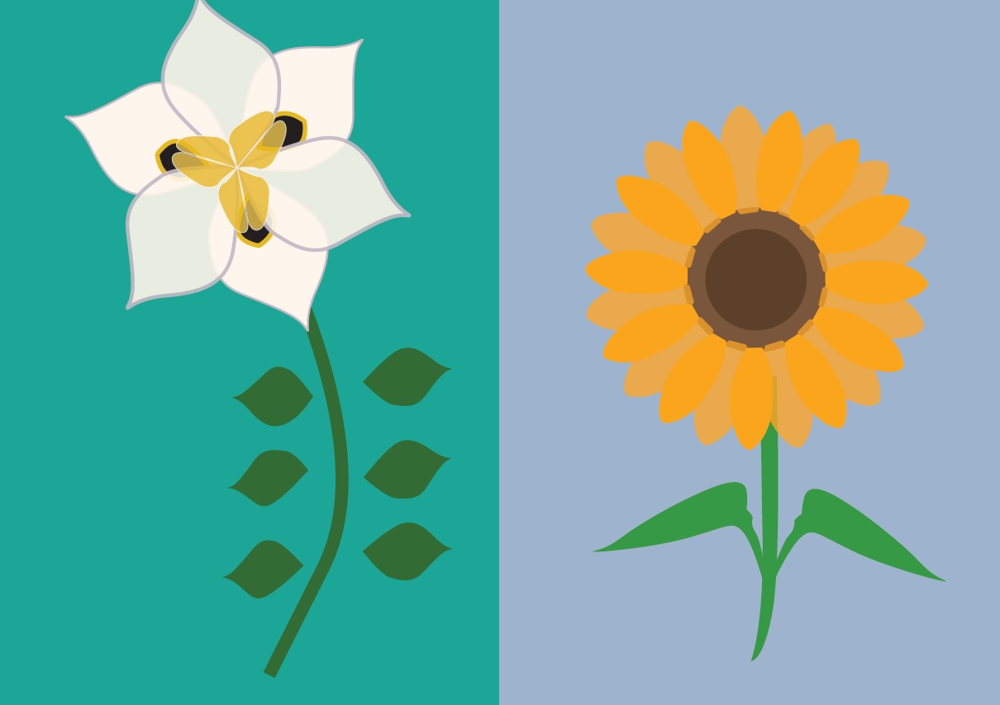
U ovoj sam vježbi obrađivao spajanje/oduzimanje složenih objekata i primjenjivao razne vrste gradijenata.
Link za četvrti PDF dokument.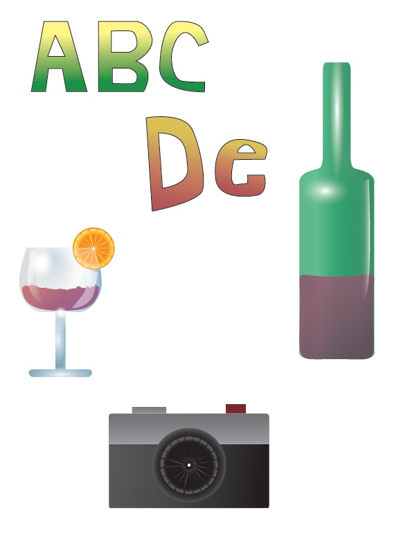
Nakon vektorske grafike sam prešao na piksel grafiku.
Ovdje sam pomoću Clone Stamp i Heal alata uklanjao nedostatke na slikama, kako bih dobio što realističniji rezultat.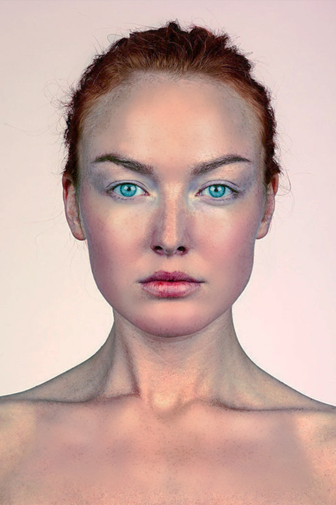 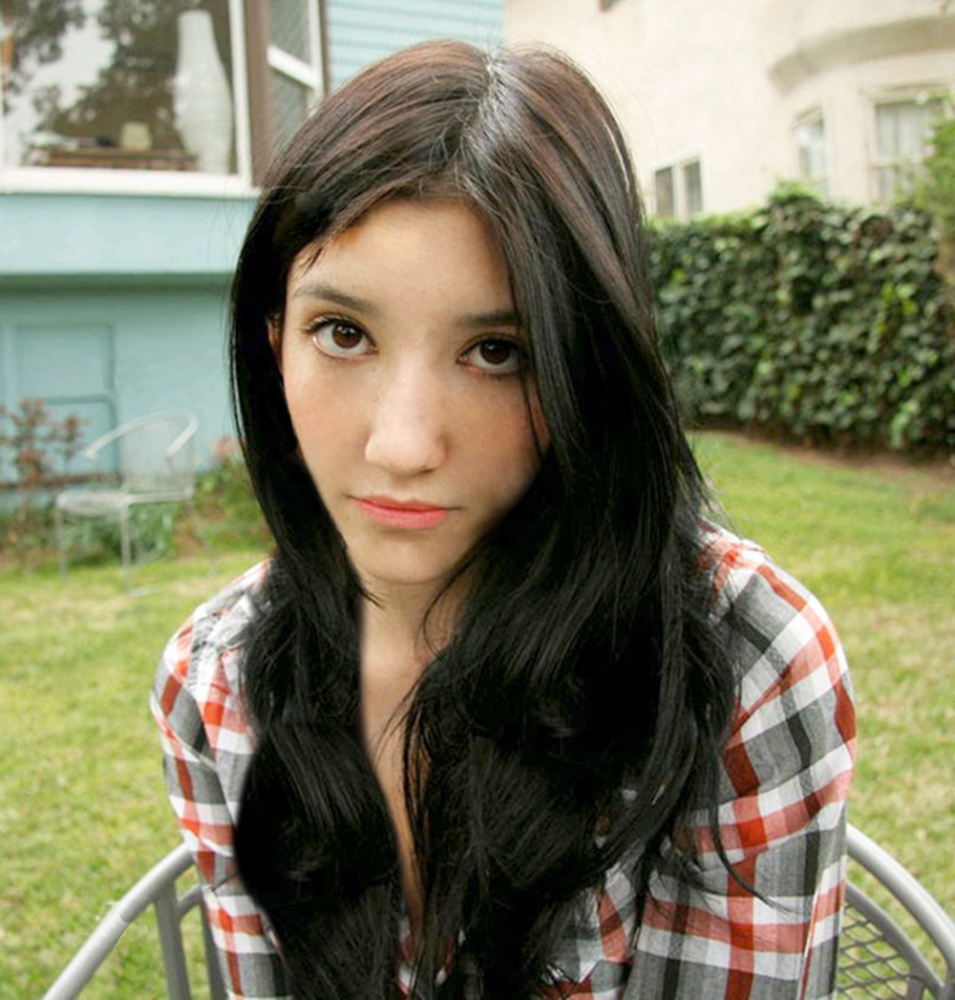
Crno-bijele fotografije sam kolorirao putem kanala u Photoshopu te sam Brush alat koristio kao selekciju.
Istu tehniku sam koristio na svom portretu, stilom kako je Warhol naslikao Monroe.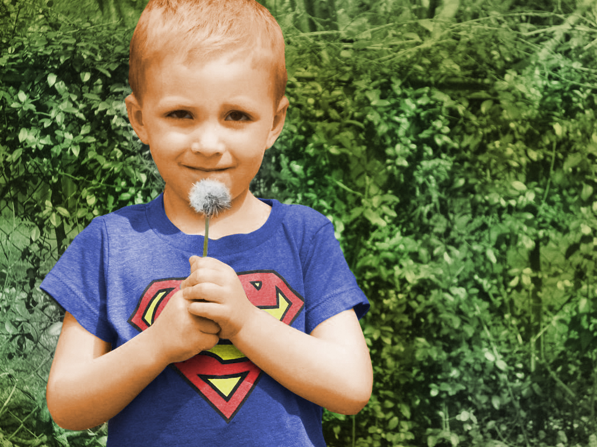

Sedma vježba je uključivala fotomontažu; jednostavne objekte sam Magnetic Lasso alatom selektirao, dok sam složenije selektirao putem kanala.
Kako bih dobio dojam realističnosti, koristio sam efekt sjene i korigirao kontrast i boje završne slike.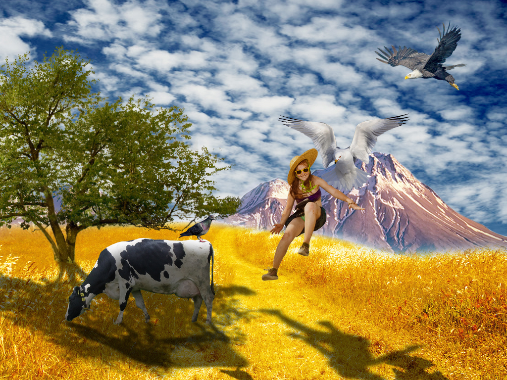
Zadnja kategorija vježbi ovog kolegija je video. Pokretni video sam pretvorio u statični koji jedino daje pokret vatrice - kinemagraf.
Ovdje sam upoznao alate za spajanje i skraćivanje videa, umetanje efekata, zvuka i teksta.
U finalnoj vježbi sam se upoznao s kodiranjem HTML i CSS jezikom te sam stvorio vlastite stranice koje sam objavio u svoj GitHub račun.
Ovdje možete vidjeti moju početnu stranicu.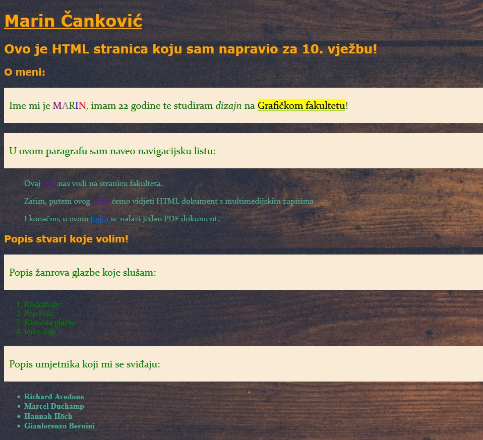
I za kraj Vam predstavljam svoja prva dva projektna zadatka u kojima sam upotrijebio stečena znanja iz spomenutih vježbi.
Treći projektni zadatak možete vidjeti klikom na Video na početku ove stranice!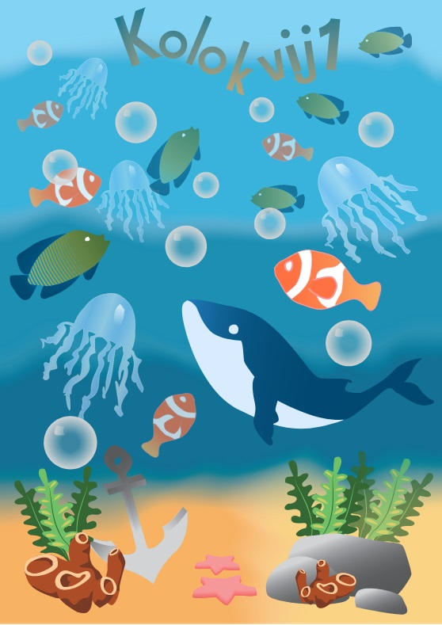 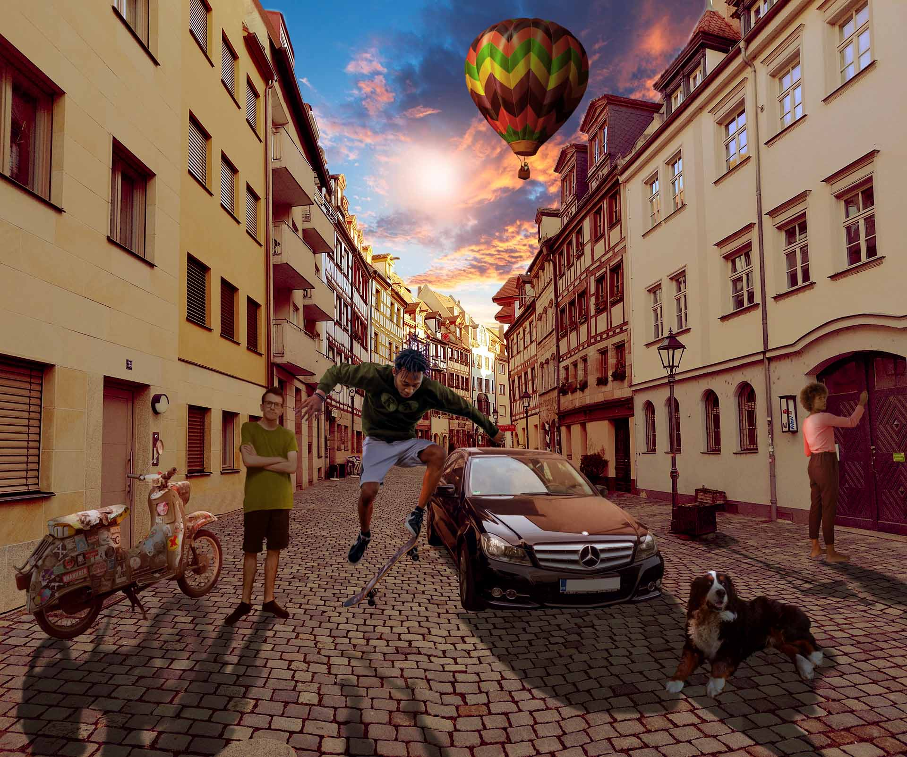